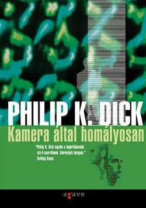

Remélem feltűnt valakinek a kapcsolat a mai bejegyzésem és az egyik múltkori között. Történetesen a Blade Runner alapjául is egy Philip K. Dick regény szolgált alapul. Ugyan nagyban átírták, hogy filmre lehessen vinni. Sokaknak emiatt nem tetszett a film, de nekem igen. Én az Álmodnak-e az androidok elektronikus bárányokkal? című könyvet és a Szárnyas fejvadász (ez a címet is, hogy sikerült összehozni?) című filmet külön kezelem. Két külön alkotás, az egyik épít a másikra, de attól még nem lesz kevesebb. Az a helyzet, hogy most nem is igazán ezzel akarok foglalkozni, hanem a posztcímben szereplő másik Philip K. Dick regénnyel.

A regény főhőse Bob Arctor, aki beépített zsaru és a „kábítószer-elleneseknél” van. A maszkafandernek hála munkahelyén sosem lehet felismerni, Fred nem tárhatja fel kilétét. Feladata, rábukkanni a rendkívül káros H-Anyag nevű drog rejtélyes forrására. Az utcán, Fred, azaz Bob egy sima drogos, aki lassan a dílerkedés felé veszi az irányt, hogy a szervet még több használható információhoz juttassa. Eközben maga is a H-Anyag fogyasztójává válik, és ez bizonyos mellékhatások kialakulásához vezet.
Egyik nap Fred egy érdekes megbízást kap maszkafanderes főnökétől, Hanktől: ezentúl Bob Arctort, a drogdílert kell majd megfigyelnie és jelentenie róla. Bob, haverjaival él együtt saját házában. Gyakorlatilag egyik-napról a másikra felborul Bob jól megszokott élete. Lassan úrrá lesz rajta a paranoia. Attól tart, hogy valaki figyeli őt és a barátait. Bob senkiben nem bízik, kifordul önmagából, és jönnek a legvadabb haluk, amit csak el lehet képzelni.
A maszkafanderes Fred kénytelen a teljesen őrült Arctort nézni a megfigyelés során felvett szalagokon. Undorodik Arctortól és társaitól, akiken vég nélküli csevejt folytatnak a száznyolcvan centis hasistömbről, akit ha felhúznak, akkor simán átsétál a mexikói határon, vagy épp az eszkimók vadásszák le. Fred lassan kiég, kiborítja, amit lát. Fogalma sincs, hogy saját magát nézi, amint be-betépeget haverjaival és szedi a H-Anyagot.
Dick rendkívül kemény képet fest ebben a regényben. A valóság, a nem valóság, a humor, az őrület és a teljes leépülés világa ez. Nehéz egy utazásra viszi az olvasót. Amíg ezt olvastam én is utaztam Arctorral és társaival.
Érdemes elolvasni a szerző rövid jegyzetét a regény végén, megrázó. Nagyon durva összefoglalást kapunk. Mindenkit arra bíztatok, hogy olvassa el ezt a könyvet, utazzon, játsszon, ugyanakkor gondolkozzon el azon miről is szól ez az egész. Pokoli jó.